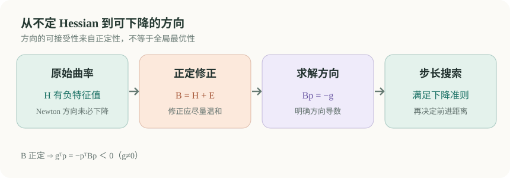

3.4 Hessian 修正：让 Newton 方向成为下降方向
Newton 法使用局部二次模型提供搜索方向；若 Hessian 不正定，这个方向可能不是下降方向。通过构造正定矩阵 B=H+E，可以在保持曲率信息的同时恢复下降性。
Newton 方程为什么可能失效
给定二阶可微目标 f(x)，在当前点记 g=∇f(x)、H=∇²f(x)。普通 Newton 方向满足 Hp=−g。若 H 正定且 g 非零，便有 gᵀp=−pᵀHp＜0；这意味着沿 p 取足够小的正步长，目标下降。
若 H 含负特征值，二次模型在某些方向向下弯曲，方程给出的 p 可能正交于梯度，甚至使 gᵀp＞0。不能只因为解出了线性方程就称其为“下降方向”。
修正 E 应解决什么问题
设计 B=H+E 时有两条要求：首先，B 必须有足够正的曲率，以免方向求解不稳定；其次，在 H 已经足够正定时，最好不修改，借此保留 Newton 法的局部快速收敛。
仅让每一轮 B 正定还不够形成完整的全局收敛论证。常用的有界修正分解性质要求：当沿迭代出现的 Hessian 序列有界时，修正矩阵的条件数也一致有界。配合目标水平集紧性及合适线搜索，才能获得梯度趋零的全局化结果。
实现方式可以是剪裁负特征值、加 τI、修正 Cholesky 分解，或者在对称不定分解的块上修正。它们改变的矩阵结构和成本并不相同。

二维反例：普通 Newton 步没有下降性
取 f(x,y)=x²−y²，在 (1,1) 处 g=(2,−2)，H=diag(2,−2)。普通 Newton 解 pᴺ=(−1,−1)，于是 gᵀpᴺ=0；该方向不是严格下降方向。
把 H 加上 3I，可得 B=diag(5,1)，于是 p=(−0.4,2)，gᵀp=−4.8＜0。这个例子只演示方向导数的变化：f 本身向下无界，因此不能据此宣称迭代存在全局极小解。
下降方向与收敛定理的边界
正定 B 保证局部方向下降，却不保证 α=1 的函数值下降，也不保证在所有目标上收敛到最小值。仍需线搜索确定 α，满足 Armijo 或 Wolfe 等条件。
某些目标在解附近 Hessian 为奇异或近奇异矩阵，修正可能一直无法消失，此时局部速度不一定保留 Newton 的二次收敛。若某个方法声称“全局收敛”，务必检查紧性、光滑性、修正矩阵条件数和步长规则。
交互实验：修改量如何把方向导数变负
固定 H=diag(2,−2)、g=(2,−2)。调整 τ，只有 τ＞2 时 B=H+τI 正定，才可以保证搜索方向严格下降。
改变参数，观察数值判据
Python：独立计算与断言
直接求解对角线性系统，比较原 Newton 方向与正定修正方向的梯度内积。仅使用 Python 标准库。
"""Hessian modification: a direction can be non-descent before correction."""
def direction(tau: float):
g = (2.0, -2.0)
h = (2.0 + tau, -2.0 + tau)
if abs(h[0]) < 1e-12 or abs(h[1]) < 1e-12:
raise ValueError("singular modified Hessian")
p = (-g[0] / h[0], -g[1] / h[1])
return p, sum(g[i] * p[i] for i in range(2))
if __name__ == "__main__":
p0, slope0 = direction(0.0)
p, slope = direction(3.0)
print("raw Newton:", p0, "directional derivative:", slope0)
print("modified Newton:", p, "directional derivative:", slope)
assert p0 == (-1.0, -1.0) and slope0 == 0.0
assert p == (-0.4, 2.0)
assert abs(slope + 4.8) < 1e-12自检：若 τ=1，B 的两个特征值是多少？为什么此时不能仅靠求解 Bp=−g 判断方向必定下降？